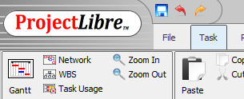
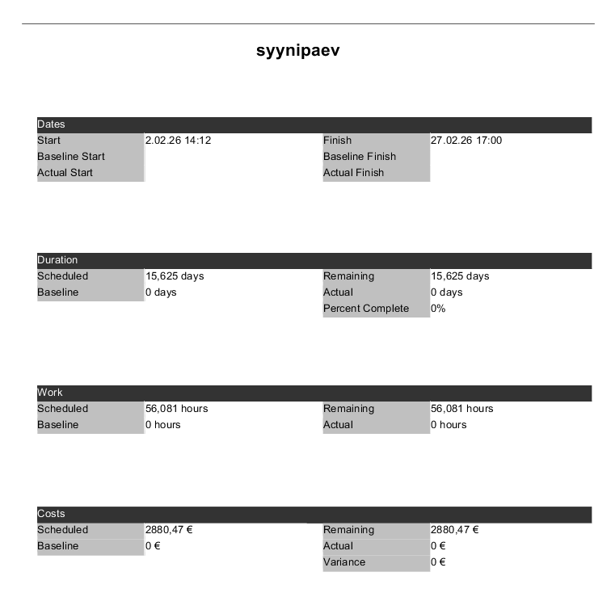
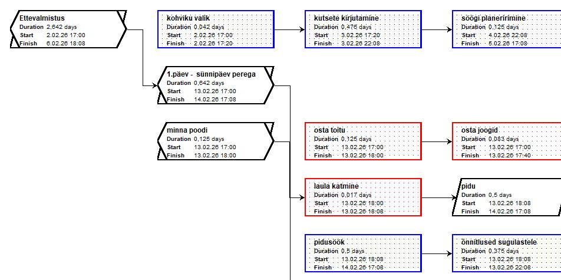
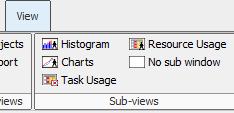
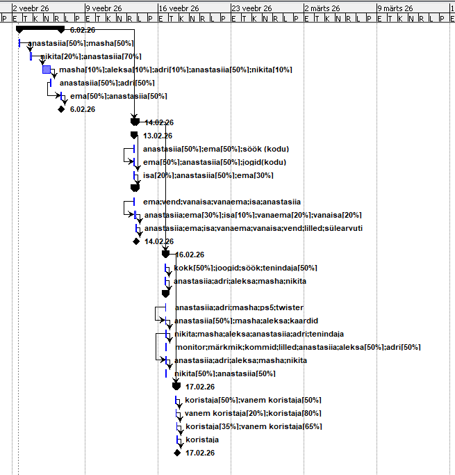

Diagrammid ProjectLibre'is
kuidas luua ja kasutada diagramme ProjectLibre'is
Põhivaated — ülariba
ProjectLibre'i ülaribalt leiad kõik põhivaated: Gantt (põhidiagramm), Network (sõltuvuste võrgustik), WBS (tööjaotuse struktuur) ja Task Usage (ülesannete kasutus). Samuti saad kasutada Zoom In / Zoom Out, et ajatelge lähemale või kaugemale suumida.

Projekti ülevaade — Projects tabel
ProjectLibre'is saad projekti üldandmeid vaadata tabelivormis. Seal on näha projekti nimi (syynipaev), algus- ja lõpukuupäev, planeeritud kulu (2880,47 €), maht (56,081 tundi) ning tegelik kulu. Selle vaate leiab menüüst File → Projects.

Project Information — projekti aruanne
ProjectLibre võimaldab kuvada projekti kokkuvõtet aruande kujul. Aruandes on näha Dates (algus 2.02.26, lõpp 27.02.26), Duration (15,625 päeva), Work (56,081 tundi) ja Costs (planeeritud 2880,47 €, tegelik 0 €). Ava: File → Projects Dialog.

Network — sõltuvuste diagramm
Network-vaade kuvab kõik ülesanded kastidena ja nende vahelised sõltuvused nooltena. See aitab visualiseerida projekti loogilist voogu — näiteks Ettevalmistus → kohviku valik → kutsete kirjutamine jne. Punased kastid tähistavad kriitilist teed. Ava ülaribalt: Network.

Sub-views — Histogram ja Charts
Menüüst View leiad alakuva (Sub-views) valiku: Histogram (ressursside koormuse tulpdiagramm), Charts (üldised diagrammid), Task Usage (ülesande kasutus ajas) ja Resource Usage (ressursi kasutus ajas). Vali sobiv alakuva, et kuvada see Gantt-diagrammi all.

Gantt-diagramm ressurssidega — ajajoon
Gantt-diagrammi paremal poolel kuvatakse ülesannete ribade kõrval ka määratud ressursid koos nende koormusprotsendiga — näiteks anastasiia[50%];masha[50%]. Ajajoonel on näha projekti kulg veebruarist märtsini, teemantmärgid (◆) tähistavad vahe-eesmärke. See annab kiire ülevaate, kes millal töötab ja kui suurel määral.
